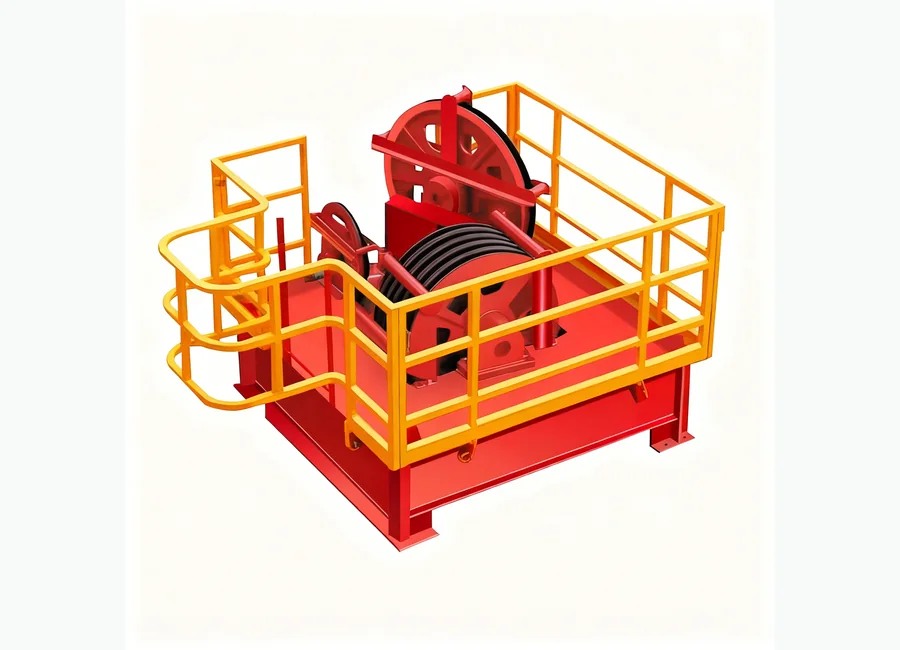
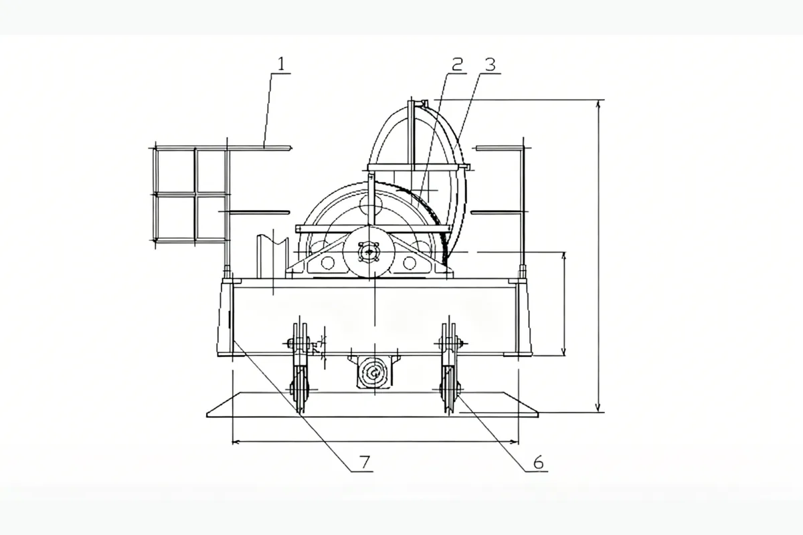

How to Request a Quotation
- Send part number or equipment model.
- Attach product photo or technical drawing if available.
- We will check compatibility and prepare quotation details.
Drilling Rigs and Drawworks Accessories
Drilling Rigs and Drawworks Accessories. TC Series Crown Block for oilfield equipment maintenance and replacement projects. Buyers can send part number, equipment model, product photo or technical drawing for quotation.

TC Series Crown Block for oilfield equipment maintenance and replacement projects. Buyers can send part number, equipment model, product photo or technical drawing for quotation.
Specification matching, export packaging, WhatsApp and email communication support for oilfield buyers.
Description
Images marked as description materials are placed here and are not used as the product card thumbnail.

Specifications
If the original product folder includes a model or specification table, it is displayed here for product selection and quotation support.
| Направляющий шкив | Z05020202023AA | Шкив редуктора | Z04020900021AA | Корончатое колесо | P0300278AA |
|---|---|---|---|---|---|
| Вал шкива | P2400101AA | Узел шлифовального круга | Z04120200001AA | Корончатая ось | P2400079AA |
| Канатный шкив | P0300020AA | Вал крана | P2400082AA | Быстроходный тросовый шкив | P0300279AA |
| Вал шкива | P2400102AA | Узел шкива | Z04190100001AA | Вал шкива | P2400128AA |
| Шкив головки крана | P0300026AA | Узел неподвижного шкива | Z04190400001AA | Шкив | P0300254AA |
| Вал шкива | P2400454AA | Вал | P2400597AA | Вал шкива | P2400454AA |
| Шкив | P3400008AA | Вал крана | P2400300AA | Корончатая ось | J810-03011043 |
| Шкив крана-балки/блок ненагруженного каната | P0300057AA | Шкив/блок неподвижного каната крана | J810-03011012 | Корончатый шкив | P0300471AA |
| Вал шкива скоростного каната крана | P2400299AA | Вал шкива скоростного каната крана | J810-03012023 | Быстроходный тросовый шкив | P0300472AA |
| Шкив скоростного каната | P0300056AA | Шкив скоростного каната | J810-03013012 | Узел шлифовального круга | Z04120200021AA |
| Вал крана-балки | P2400082AA | Выходной вал | P2400028AA | Корончатая ось | P2400289AA |
| Шкив | P3000051AA | Шкив | P0300400AA | Корончатый шкив | P0300278AA |
| Шкив | P0300005AA | Шкив | P0300262AA | Корончатый шкив | P0300279AA |
| Узел колеса крана-балки | Z04120900042AA | Узел шкива неподвижного каната | Z04120900051AA | Быстроходный тросовый шкив | Z04121000031AA |
Inquiry
For fast quotation, send part number, pump model, rig model, product photo or technical drawing.